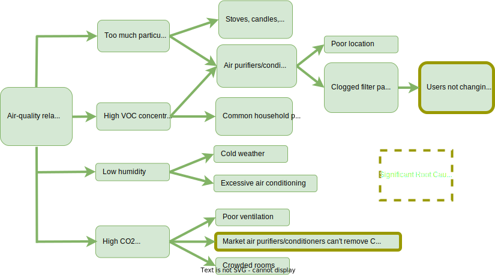
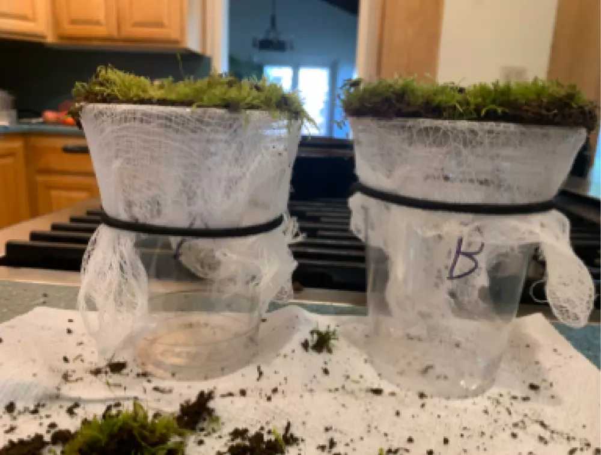

Arbor
The Natural Air Purifier
Problem:
Crowded or poorly ventilated indoor spaces can result in high concentrations of common household gases like volatile organic compounds (VOCs) and carbon dioxide (CO2), causing fatigue, impaired thinking, nausea, and headaches.
Solution:
Arbor is a sustainable, easily mountable, and clog-free air purifier that enhances the indoor environment through removing particulate and gaseous contaminants, increasing humidity, and releasing negative ions.
My Roles:

Mockup of moss air filter